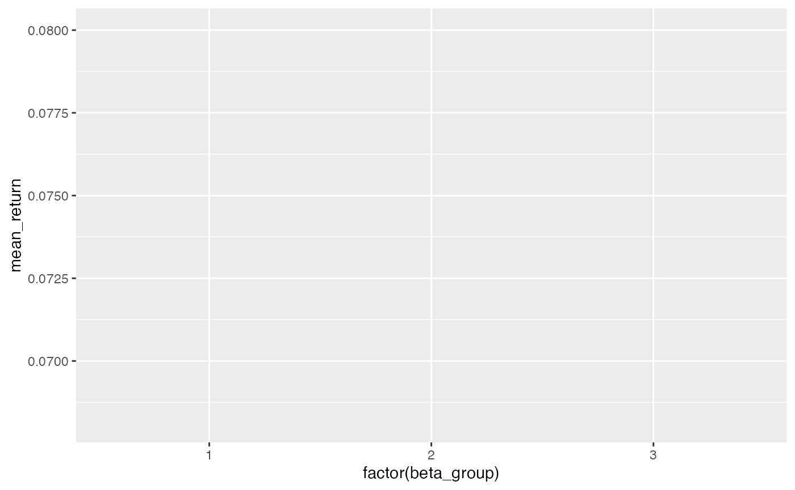

Heterogeneous Treatment Effects
heterogeneous-effects.Rmd🧪 What Are Heterogeneous Treatment Effects?
Heterogeneous Treatment Effects (HTEs) occur when the impact of a treatment varies across different units or subgroups in the population. In financial decision-making, understanding who benefits more (or less) from a given strategy can be more useful than knowing the average effect.
We’ll explore this using the fund_performance
dataset.
📦 Load the Data
## fund_id market_return alpha beta treatment return
## 1 1 0.003952435 -0.009915974 0.9217857 0 -0.007775751
## 2 2 0.036982251 -0.010799101 1.1331275 1 0.032828934
## 3 3 0.215870831 0.009640395 1.0374590 1 0.224115880
## 4 4 0.067050839 0.007356497 1.1228787 1 0.080673608
## 5 5 0.072928774 -0.040986855 0.9176203 0 0.051918971
## 6 6 0.231506499 0.030811469 0.8564341 0 0.228707376Let’s inspect how treatment effects differ by levels of
beta (a proxy for fund risk exposure):
📊 Stratify by Fund Beta Quantiles
fund_performance <- fund_performance %>%
mutate(beta_group = ntile(beta, 3)) # low, medium, high
group_summary <- fund_performance %>%
group_by(beta_group, treatment) %>%
summarise(mean_return = mean(return), .groups = "drop")
group_summary %>%
tidyr::pivot_wider(names_from = treatment, values_from = mean_return,
names_prefix = "treatment_") %>%
mutate(estimated_effect = treatment_1 - treatment_0)## # A tibble: 3 × 4
## beta_group treatment_0 treatment_1 estimated_effect
## <int> <dbl> <dbl> <dbl>
## 1 1 0.0681 0.0801 0.0119
## 2 2 0.0696 0.0726 0.00305
## 3 3 0.0791 0.0766 -0.00253📈 Visualize Treatment Effects by Risk Exposure

geom_col(position = "dodge")## geom_col: just = 0.5, width = NULL, na.rm = FALSE
## stat_identity: na.rm = FALSE
## position_dodge
labs(title = "Returns by Treatment Across Beta Groups",
x = "Beta Quantile Group", y = "Mean Return",
fill = "Treatment")## $x
## [1] "Beta Quantile Group"
##
## $y
## [1] "Mean Return"
##
## $fill
## [1] "Treatment"
##
## $title
## [1] "Returns by Treatment Across Beta Groups"
##
## attr(,"class")
## [1] "labels"
theme_minimal()## List of 136
## $ line :List of 6
## ..$ colour : chr "black"
## ..$ linewidth : num 0.5
## ..$ linetype : num 1
## ..$ lineend : chr "butt"
## ..$ arrow : logi FALSE
## ..$ inherit.blank: logi TRUE
## ..- attr(*, "class")= chr [1:2] "element_line" "element"
## $ rect :List of 5
## ..$ fill : chr "white"
## ..$ colour : chr "black"
## ..$ linewidth : num 0.5
## ..$ linetype : num 1
## ..$ inherit.blank: logi TRUE
## ..- attr(*, "class")= chr [1:2] "element_rect" "element"
## $ text :List of 11
## ..$ family : chr ""
## ..$ face : chr "plain"
## ..$ colour : chr "black"
## ..$ size : num 11
## ..$ hjust : num 0.5
## ..$ vjust : num 0.5
## ..$ angle : num 0
## ..$ lineheight : num 0.9
## ..$ margin : 'margin' num [1:4] 0points 0points 0points 0points
## .. ..- attr(*, "unit")= int 8
## ..$ debug : logi FALSE
## ..$ inherit.blank: logi TRUE
## ..- attr(*, "class")= chr [1:2] "element_text" "element"
## $ title : NULL
## $ aspect.ratio : NULL
## $ axis.title : NULL
## $ axis.title.x :List of 11
## ..$ family : NULL
## ..$ face : NULL
## ..$ colour : NULL
## ..$ size : NULL
## ..$ hjust : NULL
## ..$ vjust : num 1
## ..$ angle : NULL
## ..$ lineheight : NULL
## ..$ margin : 'margin' num [1:4] 2.75points 0points 0points 0points
## .. ..- attr(*, "unit")= int 8
## ..$ debug : NULL
## ..$ inherit.blank: logi TRUE
## ..- attr(*, "class")= chr [1:2] "element_text" "element"
## $ axis.title.x.top :List of 11
## ..$ family : NULL
## ..$ face : NULL
## ..$ colour : NULL
## ..$ size : NULL
## ..$ hjust : NULL
## ..$ vjust : num 0
## ..$ angle : NULL
## ..$ lineheight : NULL
## ..$ margin : 'margin' num [1:4] 0points 0points 2.75points 0points
## .. ..- attr(*, "unit")= int 8
## ..$ debug : NULL
## ..$ inherit.blank: logi TRUE
## ..- attr(*, "class")= chr [1:2] "element_text" "element"
## $ axis.title.x.bottom : NULL
## $ axis.title.y :List of 11
## ..$ family : NULL
## ..$ face : NULL
## ..$ colour : NULL
## ..$ size : NULL
## ..$ hjust : NULL
## ..$ vjust : num 1
## ..$ angle : num 90
## ..$ lineheight : NULL
## ..$ margin : 'margin' num [1:4] 0points 2.75points 0points 0points
## .. ..- attr(*, "unit")= int 8
## ..$ debug : NULL
## ..$ inherit.blank: logi TRUE
## ..- attr(*, "class")= chr [1:2] "element_text" "element"
## $ axis.title.y.left : NULL
## $ axis.title.y.right :List of 11
## ..$ family : NULL
## ..$ face : NULL
## ..$ colour : NULL
## ..$ size : NULL
## ..$ hjust : NULL
## ..$ vjust : num 1
## ..$ angle : num -90
## ..$ lineheight : NULL
## ..$ margin : 'margin' num [1:4] 0points 0points 0points 2.75points
## .. ..- attr(*, "unit")= int 8
## ..$ debug : NULL
## ..$ inherit.blank: logi TRUE
## ..- attr(*, "class")= chr [1:2] "element_text" "element"
## $ axis.text :List of 11
## ..$ family : NULL
## ..$ face : NULL
## ..$ colour : chr "grey30"
## ..$ size : 'rel' num 0.8
## ..$ hjust : NULL
## ..$ vjust : NULL
## ..$ angle : NULL
## ..$ lineheight : NULL
## ..$ margin : NULL
## ..$ debug : NULL
## ..$ inherit.blank: logi TRUE
## ..- attr(*, "class")= chr [1:2] "element_text" "element"
## $ axis.text.x :List of 11
## ..$ family : NULL
## ..$ face : NULL
## ..$ colour : NULL
## ..$ size : NULL
## ..$ hjust : NULL
## ..$ vjust : num 1
## ..$ angle : NULL
## ..$ lineheight : NULL
## ..$ margin : 'margin' num [1:4] 2.2points 0points 0points 0points
## .. ..- attr(*, "unit")= int 8
## ..$ debug : NULL
## ..$ inherit.blank: logi TRUE
## ..- attr(*, "class")= chr [1:2] "element_text" "element"
## $ axis.text.x.top :List of 11
## ..$ family : NULL
## ..$ face : NULL
## ..$ colour : NULL
## ..$ size : NULL
## ..$ hjust : NULL
## ..$ vjust : num 0
## ..$ angle : NULL
## ..$ lineheight : NULL
## ..$ margin : 'margin' num [1:4] 0points 0points 2.2points 0points
## .. ..- attr(*, "unit")= int 8
## ..$ debug : NULL
## ..$ inherit.blank: logi TRUE
## ..- attr(*, "class")= chr [1:2] "element_text" "element"
## $ axis.text.x.bottom : NULL
## $ axis.text.y :List of 11
## ..$ family : NULL
## ..$ face : NULL
## ..$ colour : NULL
## ..$ size : NULL
## ..$ hjust : num 1
## ..$ vjust : NULL
## ..$ angle : NULL
## ..$ lineheight : NULL
## ..$ margin : 'margin' num [1:4] 0points 2.2points 0points 0points
## .. ..- attr(*, "unit")= int 8
## ..$ debug : NULL
## ..$ inherit.blank: logi TRUE
## ..- attr(*, "class")= chr [1:2] "element_text" "element"
## $ axis.text.y.left : NULL
## $ axis.text.y.right :List of 11
## ..$ family : NULL
## ..$ face : NULL
## ..$ colour : NULL
## ..$ size : NULL
## ..$ hjust : num 0
## ..$ vjust : NULL
## ..$ angle : NULL
## ..$ lineheight : NULL
## ..$ margin : 'margin' num [1:4] 0points 0points 0points 2.2points
## .. ..- attr(*, "unit")= int 8
## ..$ debug : NULL
## ..$ inherit.blank: logi TRUE
## ..- attr(*, "class")= chr [1:2] "element_text" "element"
## $ axis.text.theta : NULL
## $ axis.text.r :List of 11
## ..$ family : NULL
## ..$ face : NULL
## ..$ colour : NULL
## ..$ size : NULL
## ..$ hjust : num 0.5
## ..$ vjust : NULL
## ..$ angle : NULL
## ..$ lineheight : NULL
## ..$ margin : 'margin' num [1:4] 0points 2.2points 0points 2.2points
## .. ..- attr(*, "unit")= int 8
## ..$ debug : NULL
## ..$ inherit.blank: logi TRUE
## ..- attr(*, "class")= chr [1:2] "element_text" "element"
## $ axis.ticks : list()
## ..- attr(*, "class")= chr [1:2] "element_blank" "element"
## $ axis.ticks.x : NULL
## $ axis.ticks.x.top : NULL
## $ axis.ticks.x.bottom : NULL
## $ axis.ticks.y : NULL
## $ axis.ticks.y.left : NULL
## $ axis.ticks.y.right : NULL
## $ axis.ticks.theta : NULL
## $ axis.ticks.r : NULL
## $ axis.minor.ticks.x.top : NULL
## $ axis.minor.ticks.x.bottom : NULL
## $ axis.minor.ticks.y.left : NULL
## $ axis.minor.ticks.y.right : NULL
## $ axis.minor.ticks.theta : NULL
## $ axis.minor.ticks.r : NULL
## $ axis.ticks.length : 'simpleUnit' num 2.75points
## ..- attr(*, "unit")= int 8
## $ axis.ticks.length.x : NULL
## $ axis.ticks.length.x.top : NULL
## $ axis.ticks.length.x.bottom : NULL
## $ axis.ticks.length.y : NULL
## $ axis.ticks.length.y.left : NULL
## $ axis.ticks.length.y.right : NULL
## $ axis.ticks.length.theta : NULL
## $ axis.ticks.length.r : NULL
## $ axis.minor.ticks.length : 'rel' num 0.75
## $ axis.minor.ticks.length.x : NULL
## $ axis.minor.ticks.length.x.top : NULL
## $ axis.minor.ticks.length.x.bottom: NULL
## $ axis.minor.ticks.length.y : NULL
## $ axis.minor.ticks.length.y.left : NULL
## $ axis.minor.ticks.length.y.right : NULL
## $ axis.minor.ticks.length.theta : NULL
## $ axis.minor.ticks.length.r : NULL
## $ axis.line : list()
## ..- attr(*, "class")= chr [1:2] "element_blank" "element"
## $ axis.line.x : NULL
## $ axis.line.x.top : NULL
## $ axis.line.x.bottom : NULL
## $ axis.line.y : NULL
## $ axis.line.y.left : NULL
## $ axis.line.y.right : NULL
## $ axis.line.theta : NULL
## $ axis.line.r : NULL
## $ legend.background : list()
## ..- attr(*, "class")= chr [1:2] "element_blank" "element"
## $ legend.margin : 'margin' num [1:4] 5.5points 5.5points 5.5points 5.5points
## ..- attr(*, "unit")= int 8
## $ legend.spacing : 'simpleUnit' num 11points
## ..- attr(*, "unit")= int 8
## $ legend.spacing.x : NULL
## $ legend.spacing.y : NULL
## $ legend.key : list()
## ..- attr(*, "class")= chr [1:2] "element_blank" "element"
## $ legend.key.size : 'simpleUnit' num 1.2lines
## ..- attr(*, "unit")= int 3
## $ legend.key.height : NULL
## $ legend.key.width : NULL
## $ legend.key.spacing : 'simpleUnit' num 5.5points
## ..- attr(*, "unit")= int 8
## $ legend.key.spacing.x : NULL
## $ legend.key.spacing.y : NULL
## $ legend.frame : NULL
## $ legend.ticks : NULL
## $ legend.ticks.length : 'rel' num 0.2
## $ legend.axis.line : NULL
## $ legend.text :List of 11
## ..$ family : NULL
## ..$ face : NULL
## ..$ colour : NULL
## ..$ size : 'rel' num 0.8
## ..$ hjust : NULL
## ..$ vjust : NULL
## ..$ angle : NULL
## ..$ lineheight : NULL
## ..$ margin : NULL
## ..$ debug : NULL
## ..$ inherit.blank: logi TRUE
## ..- attr(*, "class")= chr [1:2] "element_text" "element"
## $ legend.text.position : NULL
## $ legend.title :List of 11
## ..$ family : NULL
## ..$ face : NULL
## ..$ colour : NULL
## ..$ size : NULL
## ..$ hjust : num 0
## ..$ vjust : NULL
## ..$ angle : NULL
## ..$ lineheight : NULL
## ..$ margin : NULL
## ..$ debug : NULL
## ..$ inherit.blank: logi TRUE
## ..- attr(*, "class")= chr [1:2] "element_text" "element"
## $ legend.title.position : NULL
## $ legend.position : chr "right"
## $ legend.position.inside : NULL
## $ legend.direction : NULL
## $ legend.byrow : NULL
## $ legend.justification : chr "center"
## $ legend.justification.top : NULL
## $ legend.justification.bottom : NULL
## $ legend.justification.left : NULL
## $ legend.justification.right : NULL
## $ legend.justification.inside : NULL
## $ legend.location : NULL
## $ legend.box : NULL
## $ legend.box.just : NULL
## $ legend.box.margin : 'margin' num [1:4] 0cm 0cm 0cm 0cm
## ..- attr(*, "unit")= int 1
## $ legend.box.background : list()
## ..- attr(*, "class")= chr [1:2] "element_blank" "element"
## $ legend.box.spacing : 'simpleUnit' num 11points
## ..- attr(*, "unit")= int 8
## [list output truncated]
## - attr(*, "class")= chr [1:2] "theme" "gg"
## - attr(*, "complete")= logi TRUE
## - attr(*, "validate")= logi TRUE🌲 Optional: Use Causal Forests (grf)
If you have the grf package installed, you can run:
# Uncomment and install if needed
# install.packages("grf")
# library(grf)
# X <- fund_performance %>% select(market_return, alpha, beta)
# Y <- fund_performance$return
# W <- fund_performance$treatment
# forest <- causal_forest(X, Y, W)
# tau_hat <- predict(forest)$predictions
# hist(tau_hat, breaks = 30, main = "Estimated Treatment Effects (GRF)", xlab = "tau_hat")✅ Summary
| Subgroup (by beta) | Estimated Effect |
|---|---|
| Low beta funds | ? |
| Mid beta funds | ? |
| High beta funds | ? |
Even without advanced ML, subgroup analysis reveals important insights on how treatments work differently for different fund profiles.
📖 Citation
citation("CausalInvestData")## To cite the CausalInvestData package in publications, use:
##
## Conilias Zvobwo E (2025). _CausalInvestData: Simulated Datasets for
## Causal Inference in Investment Management_. R package version 0.1.0,
## <https://github.com/edzai/CausalInvestData>.
##
## A BibTeX entry for LaTeX users is
##
## @Manual{,
## title = {CausalInvestData: Simulated Datasets for Causal Inference in Investment Management},
## author = {Edzai {Conilias Zvobwo}},
## year = {2025},
## note = {R package version 0.1.0},
## url = {https://github.com/edzai/CausalInvestData},
## }